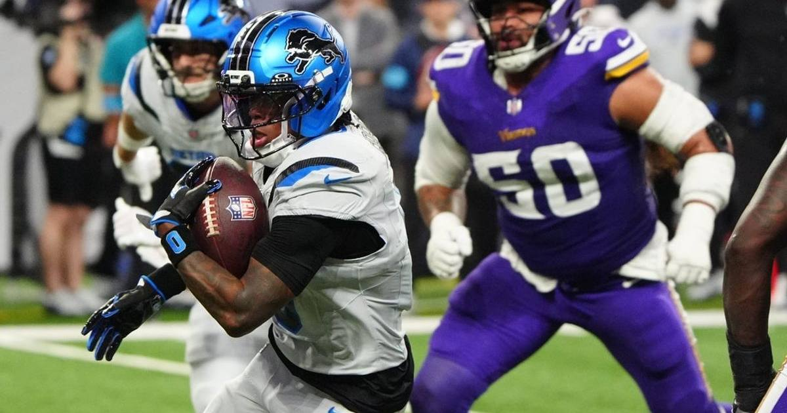

Final Unbeaten Falls: Gibbs Runs Over Minnesota as Lions Hand Vikings Their First Loss, 19-15
Jahmyr Gibbs ran for 153 yards and the Lions ended the NFL's last unbeaten season, beating Minnesota 19-15 at Ford Field.

There are no more unbeaten teams in the NFL. The Detroit Lions made sure of it on Sunday, beating the Minnesota Vikings 19-15 at Ford Field behind a second-half takeover from Jahmyr Gibbs.
Gibbs finished with 153 yards and a touchdown on 23 carries, the most rushing yardage Minnesota had allowed all year. The remarkable part is how it happened: in the first half, Gibbs had four carries for negative yards, and the Vikings' defense looked every bit as good as its reputation. Then the second half started, and he ran an exhausted Vikings defensive line into the ground.
How it unfolded
Detroit struck first on a Jake Bates 25-yard field goal, but Minnesota answered with a seven-play, 74-yard drive capped by a leaping 1-yard touchdown catch from Justin Jefferson in the opening minute of the second quarter. The Vikings took a 7-6 lead into halftime after Gibbs broke free for a 19-yard run in the closing seconds of the half to set up Bates' 37-yard field goal.
Bates banged a 46-yard attempt off the left upright on Detroit's first drive of the second half, but the Lions kept feeding Gibbs. At 4:40 of the third quarter, his 30-yard touchdown run gave Detroit its first lead, 12-7, after he was stopped on the two-point try.
Minnesota answered. Kyler Murray, who finished 17-of-29 for 210 yards and two touchdowns, hit Jordan Addison on a 51-yard play to set up an 8-yard scoring pass to T.J. Hockenson with 8:44 left, then found Addison again for the two-point conversion and a 15-12 Vikings lead.
Detroit's response was pure ground game. The Lions leaned on their running attack down the field, and Jared Goff connected with Jameson Williams on a 7-yard touchdown pass with 4:35 remaining to retake the lead. Minnesota went three-and-out on its next possession, and Detroit converted three first downs to run out the clock.
The numbers behind it
Goff finished 18-of-25 for 176 yards with the go-ahead touchdown, but also threw his first interception of the season. Williams caught four passes for 70 yards. Sione Vaki added 11 carries for 65 yards as Detroit's second ground option, and the Lions piled up 384 yards of offense against a defense that had been carrying Minnesota all year.
The win moves Detroit to 5-2, its third straight victory, while Minnesota falls to 6-1 but stays atop the NFC North. The Vikings get no breather: Josh Allen and the Bills are next. And somewhere in Miami, the 1972 Dolphins can relax — with the last unbeaten team down, their perfect season remains the league's only one.
The win came with a scare. Lions linebacker Jack Campbell suffered a neck injury early in the fourth quarter while tackling Hockenson, lay facing the ground surrounded by medical personnel, and was taken off on a cart and transported to a local hospital for evaluation.
Sources
• ESPN box score, Vikings at Lions, November 1, 2026 (event 401873030)
• Deadspin / Field Level Media game report, November 1, 2026
• Zone Coverage postgame report, November 1, 2026
• Bring Me The Sports postgame report, November 1, 2026
Gear up: Fanatics